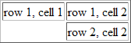

# 1.HTML 链接 & 锚语法
链接的 HTML 代码很简单。它类似这样：
<a href="https://www.baidu.com">Link text</a>
命名锚的语法：
<a name="label">锚（显示在页面上的文本）</a>
您可以使用 id 属性来替代 name 属性，命名锚同样有效。
<a name="tips">基本的注意事项 - 有用的提示</a>
<a href="#tips">有用的提示</a>
您也可以在其他页面中创建指向该锚的链接：
<a href="http://www.w3school.com.cn/html/html_links.asp#tips">有用的提示</a>
将 # 符号和锚名称添加到 URL 的末端，就可以直接链接到 tips 这个命名锚了。
# 2.img
替换文本属性（Alt）
alt 属性用来为图像定义一串预备的可替换的文本。替换文本属性的值是用户定义的。
在浏览器无法载入图像时，替换文本属性告诉读者她们失去的信息。此时，浏览器将显示这个替代性的文本而不是图像。
为页面上的图像都加上替换文本属性是个好习惯，这样有助于更好的显示信息，并且对于那些使用纯文本浏览器的人来说是非常有用的。
// 图像的 align 属性设置为 "right"。图像将浮动到文本的右侧。
<img src="boat.gif" alt="Big Boat" width="50" height="50" align ="right">
您也可以把图像作为链接来使用：
<a href="/example/html/lastpage.html"><img border="0" src="/i/eg_buttonnext.gif" /></a>
# 3.table
# 3.1

// background 向表格添加背景图片
<table border="1" background="/i/eg_bg_07.gif">
<tr> // <tr> 表行
<th bgcolor="red">姓名</th> // <th> 表头, 表头设置特定背景色
<td>Bill Gates</td> // <td> 表列
</tr>
<tr>
<th rowspan="2">电话</th>
<td>这个单元包含一个列表：
<ul>
<li><a href="https://www.baidu.com">苹果</a></li>
<li>香蕉</li>
<li>菠萝</li>
</ul>
</td>
</tr>
<tr>
<td>
// Cell padding 来创建单元格内容与其边框之间的空白。
// Cell spacing 增加单元格之间的距离
// bgcolor 向表格添加背景色
<table border="1" cellpadding="10" cellspacing="3" bgcolor="blue">
<tr>
<td>A</td>
<td>B</td>
</tr>
<tr>
<td>C</td>
<td>D</td>
</tr>
</table>
</td>
</tr>
</table>
# 3.2

<p>Table with frame="box":</p>
<table frame="box">
<tr>
<th>Month</th>
<th>Savings</th>
</tr>
<tr>
<td>January</td>
<td>$100</td>
</tr>
</table>
<p>Table with frame="above":</p>
<table frame="above">
<tr>
<th>Month</th>
<th>Savings</th>
</tr>
<tr>
<td>January</td>
<td>$100</td>
</tr>
</table>
<p>Table with frame="below":</p>
<table frame="below">
<tr>
<th>Month</th>
<th>Savings</th>
</tr>
<tr>
<td>January</td>
<td>$100</td>
</tr>
</table>
<p>Table with frame="hsides":</p>
<table frame="hsides">
<tr>
<th>Month</th>
<th>Savings</th>
</tr>
<tr>
<td>January</td>
<td>$100</td>
</tr>
</table>
<p>Table with frame="vsides":</p>
<table frame="vsides">
<tr>
<th>Month</th>
<th>Savings</th>
</tr>
<tr>
<td>January</td>
<td>$100</td>
</tr>
</table>
# 3.3
单元格的边框没有被显示出来。为了避免这种情况，在空单元格中添加一个空格占位符，就可以将边框显示出来。

<table border="1"> // 带边框
<caption>我的标题</caption> // table 标题
<tr>
<td>row 1, cell 1</td>
<td>row 1, cell 2</td>
</tr>
<tr>
<td> </td> // 空格由和号开始 ("&")，然后是字符"nbsp"，并以分号结尾(";")
<td>row 2, cell 2</td>
</tr>
</table>
# 3.4
横跨两列的单元格，横跨两行的单元格
<th colspan="2">电话</th>
<th rowspan="2">电话</th>
# 4. 无序 ul, 有序 ol, 自定义列表项 dl

<h2>一个定义列表：</h2> | |
<ul type="square"> // type="circle" type="disc" | |
<li>咖啡</li> | |
<li>茶</li> | |
<li>牛奶</li> | |
</ul> | |
<ol start="50"> | |
<li>咖啡</li> | |
<li>牛奶</li> | |
<li>茶</li> | |
</ol> | |
<ol type="A"> // type="a", type="I", type="i" | |
<li>咖啡</li> | |
<li>牛奶</li> | |
<li>茶</li> | |
<ul> | |
<li>红茶</li> | |
<li>绿茶 | |
<ul> | |
<li>中国茶</li> | |
<li>非洲茶</li> | |
</ul> | |
</li> | |
</ul> | |
</ol> | |
<dl> | |
<dt>计算机</dt> | |
<dd>用来计算的仪器 ... ...</dd> | |
<dt>显示器</dt> | |
<dd>以视觉方式显示信息的装置 ... ...</dd> | |
</dl> |
# 5. div, span
<!DOCTYPE html> | |
<html> | |
<head> | |
<link rel="stylesheet" type="text/css" href="mystyle.css"> | |
<style type="text/css"> | |
body { | |
background-color: pink; | |
} | |
#header { | |
background-color:black; | |
color:white; | |
text-align:center; | |
padding:5px; | |
} | |
.nav { | |
line-height:30px; | |
background-color:#eeeeee; | |
height:300px; | |
width:100px; | |
float:left; | |
padding:5px; | |
} | |
#section { | |
width:350px; | |
float:left; | |
padding:10px; | |
} | |
#footer { | |
background-color:black; | |
color:white; | |
clear:both; | |
text-align:center; | |
padding:5px; | |
} | |
</style> | |
</head> | |
<body> | |
<div id="header"> | |
<h1>City Gallery</h1> | |
</div> | |
<div class="nav"> | |
London<br> | |
Paris<br> | |
Tokyo<br> | |
</div> | |
<div id="section"> | |
<h2>London</h2> | |
<p> | |
London is the <span style="color:red">capital city</span> of England. It is the most populous city in the United Kingdom,with a metropolitan area of over 13 million inhabitants. | |
</p> | |
</div> | |
<div id="footer"> | |
Copyright ? W3Schools.com | |
</div> | |
</body> | |
</html> |
# 6. 框架 frameset, frame

不能将 "body" 标签与 "frameset" 标签同时使用！
假如一个框架有可见边框，用户可以拖动边框来改变它的大小。为了避免这种情况发生，可以在 <frame> 标签中加入：noresize="noresize"。
<html> | |
<frameset rows="25%,50%,25%"> // 水平框架 | |
<frame src="/example/html/frame_a.html"> | |
<frameset cols="25%,50%,25%"> // 垂直框架 | |
<frame src="https://www.sina.com.cn/"> | |
<frame src="https://www.baidu.com"> | |
<frame src="/example/html/frame_c.html"> | |
</frameset> | |
<frame src="/example/html/frame_c.html"> | |
</frameset> | |
</html> |

// // view-source:https://www.w3school.com.cn
<html>
<frameset cols="120,*">
<frame src="/example/html/html_contents.html">
<frame src="/example/html/frame_a.html" name="showframe">
</frameset>
</html>
// view-source:https://www.w3school.com.cn/example/html/html_contents.html
<html>
<body>
<a href ="/example/html/frame_a.html" target ="showframe">Frame a</a><br />
<a href ="/example/html/frame_b.html" target ="showframe">Frame b</a><br />
<a href ="/example/html/frame_c.html" target ="showframe">Frame c</a>
</body>
</html>
// view-source:https://www.w3school.com.cn/example/html/frame_a.html , frame_b.html, frame_c.html
<html>
<body bgcolor="#8F8FBD">
<h3>Frame A</h3>
</body>
</html>
# 7. 内联框架 iframe

height 和 width 属性用于规定 iframe 的高度和宽度，属性值的默认单位是像素，但也可以用百分比来设定（比如 "80%"）
frameborder 属性规定是否显示 iframe 周围的边框，设置属性值为 "0" 就可以移除边框
注释：由于链接的目标匹配 iframe 的名称，所以点击 "百度新闻" 链接，会在 iframe 中打开百度新闻网页。
<iframe src="https://www.baidu.com" frameborder="0" width="80%" height="200" name="iframe_a"></iframe> | |
<p><a href="http://news.baidu.com/" target="iframe_a">百度新闻</a></p> |
<iframe src="https://www.baidu.com" frameborder="0" width="80%" height="200" name="iframe_a"></iframe>
<p><a href="http://news.baidu.com/"target="iframe_a"> 百度新闻 </a></p>
# 8. HTML 头部元素
标签 描述
<head> 定义关于文档的信息。
<title> 定义文档标题。
<base> 定义页面上所有链接的默认地址或默认目标。
<link> 定义文档与外部资源之间的关系。
<link> 标签最常用于连接样式表：
<meta> 定义关于 HTML 文档的元数据。
<meta> 标签提供关于 HTML 文档的元数据。元数据不会显示在页面上，但是对于机器是可读的。
典型的情况是，meta 元素被用于规定页面的描述、关键词、文档的作者、最后修改时间以及其他元数据。
<meta> 标签始终位于 head 元素中。
元数据可用于浏览器（如何显示内容或重新加载页面），搜索引擎（关键词），或其他 web 服务。
下面的 meta 元素定义页面的描述：
<meta name="description" content="Free Web tutorials on HTML, CSS, XML" />
下面的 meta 元素定义页面的关键词：
<meta name="keywords" content="HTML, CSS, XML" />
name 和 content 属性的作用是描述页面的内容。
<script> 定义客户端脚本。
<style> 定义文档的样式信息。
<style> 标签用于为 HTML 文档定义样式信息。
您可以在 style 元素内规定 HTML 元素在浏览器中呈现的样式
# 9. HTML 字符实体
注释：实体名称对大小写敏感！
显示结果 描述 实体名称 实体编号
空格  
< 小于号 < <
> 大于号 > >
& 和号 & &
" 引号 " "
' 撇号 'IE不支持 '
￠ 分（cent） ¢ ¢
£ 镑（pound） £ £
¥ 元（yen） ¥ ¥
€ 欧元（euro） € €
§ 小节 § §
© 版权(copyright) © ©
® 注册商标 ® ®
™ 商标 ™ ™
× 乘号 × ×
÷ 除号 ÷ ÷
# 10. HTML 颜色名
提示：仅有 16 种颜色名被 W3C 的 HTML 4.0 标准支持
它们是：aqua、black、blue、fuchsia、gray、green、lime、maroon、navy、olive、purple、red、silver、teal、white、yellow。
如果使用其它颜色的话，就应该使用十六进制的颜色值。
# 11. HTML <!DOCTYPE>
<!DOCTYPE> 声明帮助浏览器正确地显示网页
Web 世界中存在许多不同的文档。只有了解文档的类型，浏览器才能正确地显示文档。
HTML 也有多个不同的版本，只有完全明白页面中使用的确切 HTML 版本，浏览器才能完全正确地显示出 HTML 页面。这就是 <!DOCTYPE> 的用处。
<!DOCTYPE> 不是 HTML 标签。它为浏览器提供一项信息（声明），即 HTML 是用什么版本编写的。
常用的声明
HTML5
<!DOCTYPE html>
HTML 4.01
<!DOCTYPE HTML PUBLIC "-//W3C//DTD HTML 4.01 Transitional//EN"
"http://www.w3.org/TR/html4/loose.dtd">
XHTML 1.0
<!DOCTYPE html PUBLIC "-//W3C//DTD XHTML 1.0 Transitional//EN"
"http://www.w3.org/TR/xhtml1/DTD/xhtml1-transitional.dtd">
# 12. form 表单
HTML 表单用于收集用户输入。 <form> 元素定义 HTML 表单
下面是 <form> 属性的列表：
属性 描述
accept-charset 规定在被提交表单中使用的字符集（默认：页面字符集）。
action 规定向何处提交表单的地址（URL）（提交页面）。
autocomplete 规定浏览器应该自动完成表单 (默认：开启)
enctype 规定被提交数据的编码（默认：url-encoded）。
id 表单唯一 id id="form1"
method 规定在提交表单时所用的 HTTP 方法（默认：GET）。
name 规定识别表单的名称（对于 DOM 使用：document.forms.name）。
novalidate 规定在提交表单时不对表单数据进行验证。
target 规定 action 属性中地址的目标（默认：_self）。
列出了一些常用的输入限制
autocomplete 当自动完成开启，浏览器会基于用户之前的输入值自动填写值 autocomplete="off"
autofocus 规定当页面加载时 <input> 元素应该自动获得焦点 autofocus
disabled 规定输入字段应该被禁用，不可用和不可点击，被禁用的元素不会被提交
max 规定输入字段的最大值。
maxlength 规定输入字段的最大字符数。
min 规定输入字段的最小值。
pattern 规定通过其检查输入值的正则表达式。 只能包含三个字母的输入字段:pattern="A-Za-z"
placeholder 属性规定用以描述输入字段预期值的提示（样本值或有关格式的简短描述）
readonly 规定输入字段为只读 (无法修改).
required 如果设置，则规定在提交表单之前必须填写输入字段。
size 规定输入字段的宽度（以字符计）。
step 规定输入字段的合法数字间隔。如果 step="3"，则合法数字应该是 -3、0、3、6、等等。
value 规定输入字段的默认值。
下列属性适用于 type="submit" 以及 type="image"。
formaction 属性覆盖 <form> 元素的 action 属性. formaction="demo_admin.asp"
formenctype 属性规定当把表单数据（form-data）提交至服务器时如何对其进行编码 (仅针对 method="post"的表单). formenctype="multipart/form-data"
formmethod 属性定义用以向 action URL 发送表单数据 (form-data) 的 HTTP 方法. formmethod="post"
formtarget 属性规定的名称或关键词指示提交表单后在何处显示接收到的响应。 formtarget="_blank" 会提交到新窗口 / 选项卡
下列属性适用于 type="submit"
如果设置，则规定在提交表单时不对 <input> 元素进行验证。
formnovalidate 属性覆盖 <form> 元素的 novalidate 属性。 formnovalidate
下列属性适用于 type="image"
height 和 width 属性规定 <input type="image"> 元素的高度和宽度。
// action 属性定义在提交表单时执行的动作,指定了某个服务器脚本来处理被提交表单, 通常表单会被提交到 web 服务器上的网页
// method 属性规定在提交表单时所用的 HTTP 方法（GET 或 POST）
// 如果表单提交是被动的(比如搜索引擎查询),并且没有敏感信息,当您使用 GET 时，表单数据在页面地址栏中是可见的:action_page.php?firstname=Mickey&lastname=Mouse
// GET 最适合少量数据的提交。浏览器会设定容量限制。
// POST 的安全性更加，因为在页面地址栏中被提交的数据是不可见的. 如果表单正在更新数据，或者包含敏感信息(例如密码)
<form action="action_page.php" method="GET" id="form1">
First name:<br>
<fieldset>
// 定义用于文本输入的单行输入字段
<input type="text" name="firstname" value="jone" disabled>
<br>
// password 字段中的字符会被做掩码处理（显示为星号或实心圆）
<input type="password" name="psw" autocomplete="off" autofocus>
<br>
// <datalist> 元素为 <input> 元素规定预定义选项列表。
<input list="browsers" name="browser" placeholder="Firefox">
<datalist id="browsers">
<option value="Internet Explorer">
<option value="Firefox">
<option value="Chrome">
<option value="Opera">
<option value="Safari">
</datalist>
// 单选按钮允许用户在有限数量的选项中选择其中之一
<input type="radio" name="sex" value="male" checked>Male
<br>
<input type="radio" name="sex" value="female">Female
<br>
// 复选框允许用户在有限数量的选项中选择零个或多个选项
<input type="checkbox" name="vehicle" value="Bike">I have a bike
<br>
<input type="checkbox" name="vehicle" value="Car">I have a car
<br>
// 下拉列表
<select name="cars">
<option value="volvo">Volvo</option>
<option value="saab" selected>Saab</option> // 通过添加 selected 属性来定义预定义选项。
<option value="fiat">Fiat</option>
<option value="audi">Audi</option>
</select>
// 定义多行输入字段(文本域)
<textarea name="message" rows="10" cols="30" readonly>
The cat was playing in the garden.
</textarea>
// 定义可点击的按钮
<button type="button" onclick="alert('Hello World!')">Click Me!</button>
</fieldset>
Quantity (between 1 and 5):<br>
<input type="number" name="quantity" min="1" max="5">
<br>
Quantity (between 1 and 5):<br>
<input type="number" name="quantity" min="1" max="5">
<br>
// 日期
Birthday:
<input type="date" name="bday1"><br>
Enter a date before 1980-01-01:
<input type="date" name="bday2" max="1979-12-31"><br>
Enter a date after 2000-01-01:
<input type="date" name="bday3" min="2000-01-02"><br>
Select your favorite color:
<input type="color" name="favcolor"><br>
// 用于应该包含一定范围内的值的输入字段, 根据浏览器支持，输入字段能够显示为滑块控件
<input type="range" name="points" min="0" max="10"><br>
Birthday (month and year):
<input type="month" name="bdaymonth"><br>
Select a week:
<input type="week" name="week_year"><br>
Select a time:
<input type="time" name="usr_time"><br>
Birthday (date and time):
<input type="datetime" name="bdaytime"><br>
Birthday (date and time):
<input type="datetime-local" name="bdaytime"><br>
E-mail:
<input type="email" name="email"><br>
Search Google:
<input type="search" name="googlesearch"><br>
Telephone:
<input type="tel" name="usrtel"><br>
Add your homepage 某些智能手机识别 url 类型，并向键盘添加 ".com" 以匹配 url 输入。:
<input type="url" name="homepage"><br>
// multiple 属性是布尔属性。如果设置，则规定允许用户在 <input> 元素中输入一个以上的值。multiple 属性适用于以下输入类型：email 和 file。
Select images: <input type="file" name="img" multiple><br>
// 如果要正确地被提交，每个输入字段必须设置一个 name 属性。
// 定义用于向表单处理程序（form-handler）提交表单的按钮
// 表单处理程序在表单的 action 属性中指定
<input type="submit" value="Submit">
// formaction 属性覆盖 <form> 元素的 action 属性
<input type="submit" formaction="demo_admin.asp" value="Submit as admin">
</form>
下面的 "Last name" 字段位于 form 元素之外，但仍然是表单的一部分。<br>
Last name: <input type="text" name="lname" form="form1">